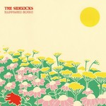

Quick Takes (May/June 2018)
Welcome to our latest edition of Quick Takes!
We took a much-needed break from the feature last month, and we truly appreciate your patience. That doesn't mean that this month's version will be slightly different, though, as regular contributor Carl had to sit one out to deal with some personal matters. He will be coming back next month, however, so things should get back to normal fairly soon. That said, I brought along contributor Peter Quinton to help out with a couple of records he thought deserved our acknowledgment. And I'm glad to say that we both agree with Iceage's latest post-punk treatise, Beyondless, where the band takes a more pop-centric approach without dismissing their signature sound. As for myself, I was quite impressed with Ryley Walker's proficient Deafman Glance, as well as The Sidekicks' summery, not to mention undoubtedly tuneful, Happiness Hours. Many positive reviews this month, but considering we'd been out for a bit, we couldn't help shining the spotlight on those records we'd actually want you to hear.
What were your favorite albums during the month of May and June? Anything we didn't get to review on our site that we should've? You can always reach us on Facebook, or on our official twitter page. Juan
...
 At the Gates
At the Gates
To Drink from the Night Itself
(Century Media)
Back in the 90’s, Sweden’s At The Gates proved that death metal can be catchy, tightly structured, and loaded with hooks while still lunging straight for the listener's throat, and their impact has been seen in nearly every sector of heavy metal music in the past few decades. However, it’s safe to say that nothing quite beats the real thing. Decades after their gargantuan initial run came and went, At The Gates prove how essential their comeback is with To Drink From The Night Itself, which may be the most quintessential album in their repertoire. It feels shocking to say this, especially since it was written without founding guitarist and songwriter Anders Bjorler, but it’s hard to deny that the blistering riffs of A Stare Bound in Stone, Daggers of Black Haze and it’s ass-kicking title track demonstrate a pitch-perfect excellence in death metal you only get from seasoned pros in the genre. [8/10] Peter Quinton
 Iceage
Iceage
Beyondless
(Matador)
Despite exhibiting perhaps the bleakest demeanor of any band this decade, Iceage have never shied from accessibility. From their onset as a young, bludgeoning punk band to their evolution as Nick Cave-worshipping goth rockers, everything the band has committed to has come loaded with memorable hooks, even if they typically dangled menacingly with a rusted edge. More than any other album, however, Beyondless puts the hooks front and center, even allowing for radiant shafts of light to grace the corners of their pits of misery. Take the anthemic Painkiller, which incorporates bombastic horns and vocals from gloom-pop queen Sky Ferreira to bring a newfound bounce to their slurred, jagged punk. What makes all this work, however, is Iceage’s commitment to darkness. Their signature, dirgey melancholia broods through standouts like Catch It and the title track, reminding listeners that while Iceage are willing to embrace pop, they’ll never do it with a smile. [8/10 - Believe the Hype]
 Jay Rock
Jay Rock
Redemption
(Top Dawg)
Growth is what fuels Jay Rock's stories in Redemption. The Watts, California rapper learned that quickly after a near-fatal motorcycle accident, a significant circumstance that almost impeded his steady rise. But Rock is a cautious as he's known on Redemption, both from those he trusts and those he has to defend. These life snippets are told through his characteristically droll flow, though what he lacks in intense enjoyment he returns with poignant directness. Aside from a spirited freestyle with Top Dawg alumni Kendrick Lamar, Rock doesn't mince words about the women who've taken advantage of him (For What It's Worth), racial disenfranchisement (ES Tales), and his past life as a gang member (The Bloodiest). The entirety of Redemption sounds as morose as his parched rhymes, with an effective backdrop of bleak bass drones and minimal synth lines, but not as much when he attempts to slow down his delivery. Stick for his soul-bearing lessons, even if he treads on familiar and worn-down musical paths. [6/10] Juan Edgardo Rodríguez
Mourn
Sorpresa Familia
(Captured Tracks)
Mourn continue to vent their pent-up frustrations with a commendable work ethic in Sorpresa Familia. Having outgrown their punkier beginnings, the Catalonian quartet adds more heft to their grunge-laced assaults. Their compositions take a more measured approach without sacrificing their intensity, all while retaining the vigor of their youthful bearing. It's that constant balance of high-pitched shrieks and funereal melodic shifts that fuels them, from the ripping, metallic guitars of Doing it Right to the driving immediacy of Fun at the Geysers. These uniform contrasts show they've taken comfort in emulating the more straight-ahead rock approach of a band like Pearl Jam, when in the past, they stuck to the raw ferocity of early PJ Harvey. Even the dour electric strum of Orange is as beautiful a left-field ballad as any. A little complexity never hurt anyone, and in Mourn's case, it's beginning to take them in new and interesting directions. [7/10] Juan Edgardo Rodríguez
 The Sea and Cake
The Sea and Cake
Any Day
(Thrill Jockey)
There's always the promise of an unceremonious return with The Sea and Cake. The longstanding Chicago post-rock group haven't released any new material since 2012's unassumingly great, Runner, and yet their return feels like that of a friend who's back in town. Nothing has changed much on Any Day, which is a perfect opportunity to catch up with their loungy, de-stressed style, a quality that makes their body of work so singular. If Any Day has that low-stakes feel, their flow just as effortless, it's because they're still keen to deliver a sort of refined muzak on steroids that never ages. Occurs is archetypal of how they incorporate a rich arrangement over a jam-oriented makeup, and Paper Window also achieves the same with its tight, instrumental musicianship. But there are some deviations to be found: Into Rain gets close to a bossa nova ambiance they sometimes pinpoint, while on I Should Care, they transition into a more uptempo battle of wits without discarding their essence. It may just be any day for A Sea and Cake, but when it comes to their soothing durability, it sounds like a welcome and long-awaited tete a tete with a meaningful confidant. [7/10] Juan Edgardo Rodríguez
The Sidekicks
Happiness Hours
(Epitaph)
The Sidekicks' Happiness Hours could convey a double meaning - either their autumnal songs bring some relief after a long shift, or they're meant to be listened to while drowning some sorrows with a cold beer. Either way, the Ohio four-piece juxtapose those yearning uncertainties with tuneful power-pop anthems that never veer into cloying territory. Singer-songwriter Steve Ciolek intones with an unshowy effervescence that's too slick to match that of an emo whiner, and just like Fountains of Wayne's Chris Collingwood, he colors his songs of self-discovery with pop culture references set against incidental burdens of the everyday. And these aren't your standard-grade, honey-glazed pop songs - the jaunty Mix for a Rainy Day takes cues from The Beatles' melodic choruses, Win Affection adopts The Smiths' love-stricken romance, and the bouncy Summer and the Magic Trick follows the breezy guitar lines of Camper Van Beethoven. The rangy Happiness Hours does take some slight stylistic musical cues, all under a college rock mantle - and it breezes by with a bright glow that's as pleasing as a warm seasonal change. [8/10] Juan Edgardo Rodríguez
 Ryley Walker
Ryley Walker
Deafman Glance
(Dead Oceans)
Something you’d never guess about Ryley Walker is that he's quite the comedian. But when he's not writing self-deprecating or faux-nostalgic tweets, the Chicagoan dons his role seriously as a modern singer-songwriter with a seventies-sounding bent. The guitar prodigy almost makes it sound easy on Deafman Glance, an inward-looking document with a slightly surrealistic lens where he immerses himself within a roots-inspired framework over a sophisticated jazz mantle. Walker, just like his senior counterparts Gene Clark and Nick Drake, offers some of his idiosyncratic charm as the album progresses, where his oft-kilter textures and sonic accouterments (Can't Explain Why, Expired) add an extra mysticism to his songs. He could've finger-picked his way into a trad-folk style on his sleep, but Walker isn't your typical troubadour, which explains why he takes a freeform route on songs that otherwise sound fitting for a smoky, adults-only club (Accommodations, Telluride Speed). His newfound knack for experimentation does take Deafman Stare into some uncharted territory, but as the classic shuffle of 22 Days attests, his tangential compositions wouldn't resonate as proficiently if they also didn't capture the majesty of his nimble performances. [8/10] Juan Edgardo Rodríguez
12 July, 2018 - 05:28 — No Ripcord Staff